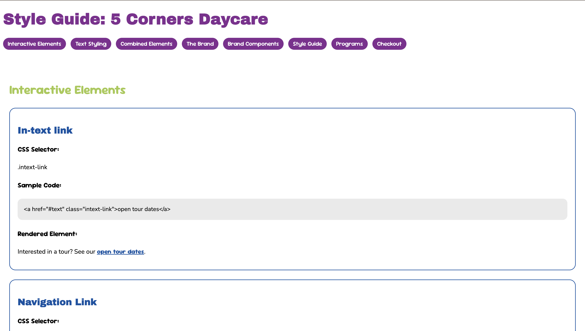
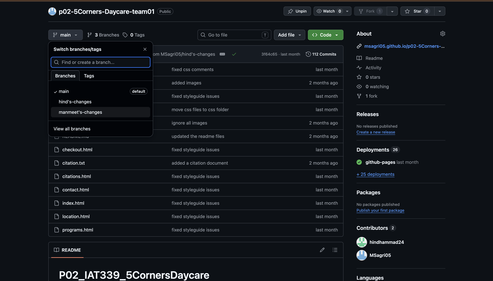
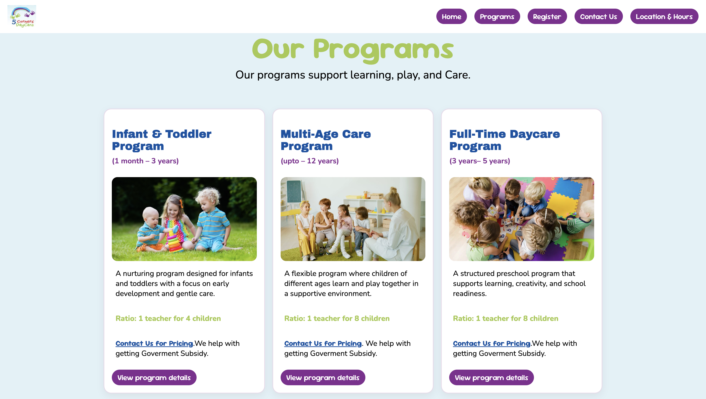
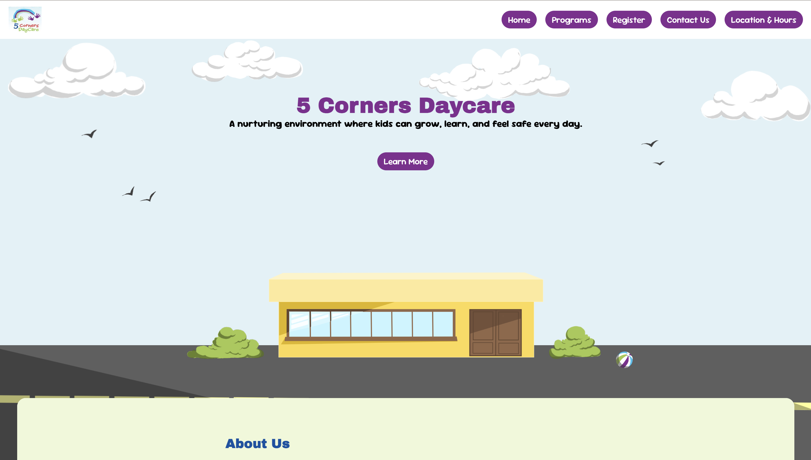
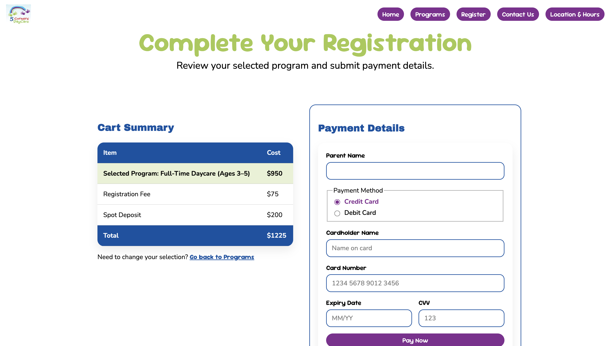
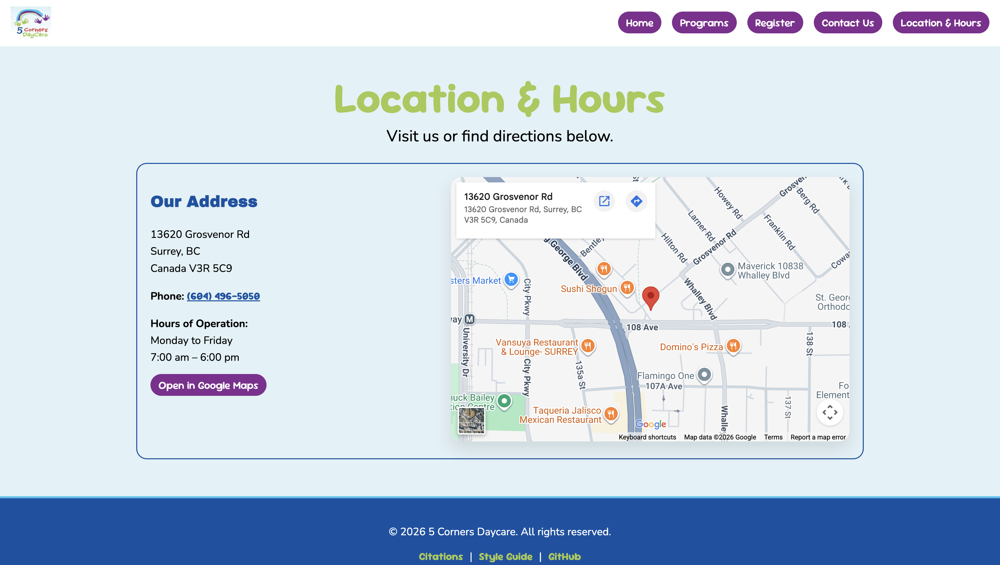
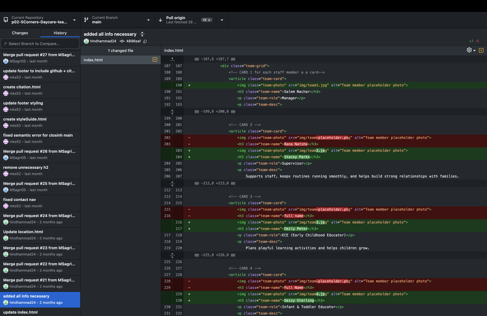
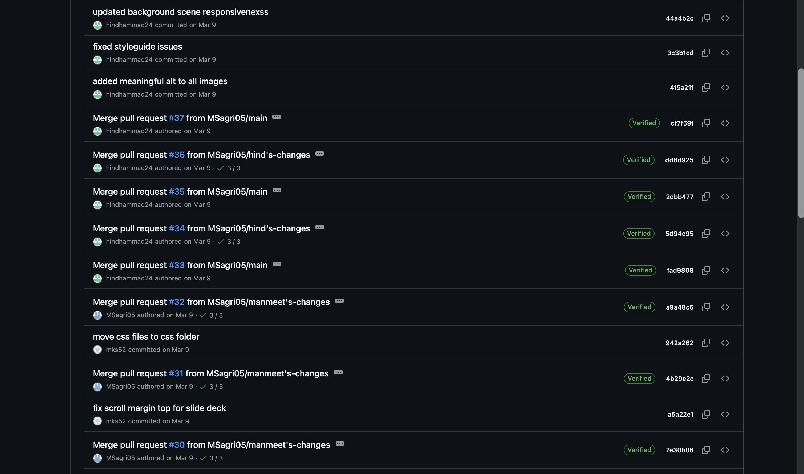
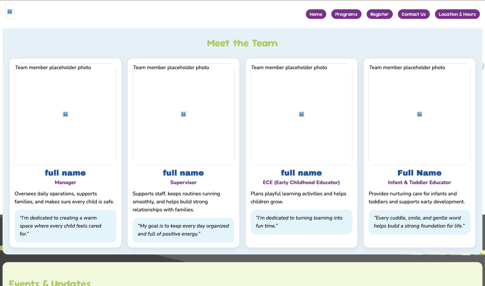
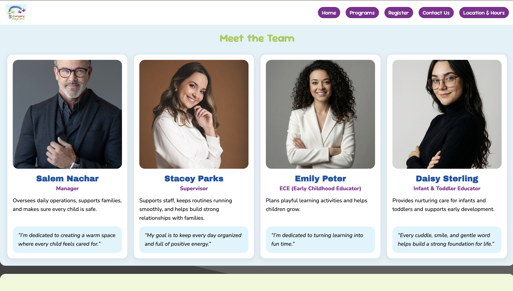

IAT 339 · Web Design & Development
5 Corners
Daycare
2
Team Members
6
Pages
Real
Client
6 wks
Timeline
February – March 2026
Team: Manmeet Sagri, Hind Hammad
My Role: Checkout, Contact & Location Pages, GitHub Management, Accessibility Audit & Visual Consistency
Tools: HTML, CSS, GitHub
What is it?
A fully responsive multi-page website built for 5 Corners Daycare, a real childcare centre
in Surrey, BC. We worked directly with the client to redesign their web presence with real content,
real contact information, and a real user need at the centre of every decision.
The site covers the full user journey from learning about the programs to completing registration,
built entirely with semantic HTML and CSS using no frameworks.
My focus was on the checkout, contact, and location pages, GitHub version control, the full
accessibility audit, and making sure every page was visually consistent and properly aligned
before final submission.
The Process
Phase 1
Style Guide & Setup


Both Hind and I had completed individual style guides for our P01 assignment. For P02 we consolidated
them into one shared document, agreeing on a unified visual direction for the client. I set up the
GitHub repository, established the branching workflow, and made sure both of us were committing
our work to separate branches before merging.
The color palette uses a purple, dark blue, light blue, and green system that runs consistently
across every page. The typography pairs Archivo Black for headings, Sour Gummy for subheadings
and interactive elements, and Nunito for body text.
Phase 2
Building the Pages


The site covers six pages: Home, Programs, Register, Contact Us, Location and Hours, and the Style Guide.
The home page features a parallax layered illustration scene, a scrolling about deck with anchor navigation,
a team grid, and an events section. Programs lists three offerings with cards and links down to detailed
daily schedule sections. The contact page has a full form with validation, and the location page embeds
a live Google Maps iframe.
All layout is built with CSS Grid and Flexbox across three responsive breakpoints at 48rem and 64rem.
Every element uses relative units (rem) so the layout scales with font size rather than breaking at
fixed pixel values.
Phase 3
Checkout, Contact & Location Pages


I built three of the site's six pages entirely. The checkout page has two sections: a cart summary
table showing the selected program, registration fee, spot deposit, and total, and a payment form
with fields for parent name, payment method, card details, expiry, and CVV. On mobile the two
panels stack; on desktop they sit side by side in a two-column grid.
The contact page pairs a quick-reference info panel on the left with a full message form on the
right. The form includes name, email, optional phone, subject, message, and a send-a-copy-to-yourself
checkbox, with both submit and reset actions. All inputs have proper label associations, required
field indicators, and autocomplete attributes throughout.
The location page uses the Google Maps Embed API to show an interactive map of the daycare alongside
the address, phone number, and hours of operation. On mobile the map and info stack vertically;
on desktop they split into two columns. A direct link to open the location in Google Maps is also
included so users on mobile can jump straight to directions.
Phase 4
GitHub & Version Control


I managed the GitHub repository throughout the project, including setting up the branching structure
and overseeing merges. Working in a real collaborative Git workflow for the first time brought its
own challenges: local and remote versions falling out of sync, conflicts appearing after pushes,
and learning how to catch and resolve those issues before they affected the shared codebase.
I identified patterns in where conflicts were coming from, communicated clearly with my teammate
about the pull-before-you-push workflow, and kept a close eye on commits throughout. It was a
genuinely useful lesson that good collaboration requires just as much communication as it does code.
Phase 5
Accessibility Audit & Visual Consistency


Once the full site was built, I ran a thorough accessibility audit across every page. This included
checking heading order (no skipped levels), confirming all images had meaningful alt text,
verifying all form inputs had associated labels using the for attribute, reviewing ARIA labels
on interactive regions, and making sure the language attribute was set on every HTML element.
The audit surfaced inconsistencies across the codebase: heading hierarchy issues, missing label
associations, and elements that were not semantically appropriate for their content. I worked
through each one systematically and fixed them before submission.
I also reviewed every page for visual consistency, correcting misaligned elements, uneven spacing,
and components that were not rendering the same way across pages. I applied box-sizing border-box
globally and used Flexbox alignment to make sure all cards, buttons, and form fields were
consistent and properly aligned at every screen size.
Problems & Reflection
Problem
Version control conflicts kept reintroducing fixed errors.
Working in a collaborative Git workflow for the first time, we ran into a pattern where fixes
would disappear after a push because local and remote versions had fallen out of sync. I identified
what was happening, communicated the issue clearly, and established a pull-first practice for
the team going forward. Monitoring commits closely from that point kept the codebase stable
through to submission.
Problem
Semantic inconsistencies surfaced during the audit and needed fixing before submission.
The audit revealed heading hierarchy issues, missing label associations, and non-semantic element
choices spread across different sections of the codebase. Rather than leaving them, I worked
through each one systematically and resolved them before we submitted. Taking ownership of the
full audit meant I came out of this project with a much stronger and more practical understanding
of accessibility than I went in with.
Feedback
The navigation wraps on very small screens instead of collapsing into a hamburger menu.
The grader noted that while the site was well-designed and responsive, a hamburger menu for very
small screens would have improved the experience by giving users a cleaner way to navigate rather
than having the nav links wrap. It is a clear next step I would prioritize if this project continued.
What I Learned
Accessibility is not a checklist. It is a design decision made at every step.
Running the full audit myself gave me a much more practical understanding of what semantic HTML
actually means in use. Heading order matters for screen readers. Label associations matter for
keyboard users. Alt text needs to describe function, not just appearance. These are not rules to
follow at the end of a project. They are decisions that should shape how you write HTML from the
first line. I came out of this project significantly more confident in writing accessible,
well-structured code from the start.